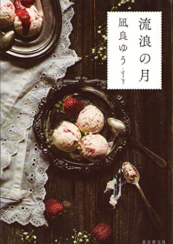
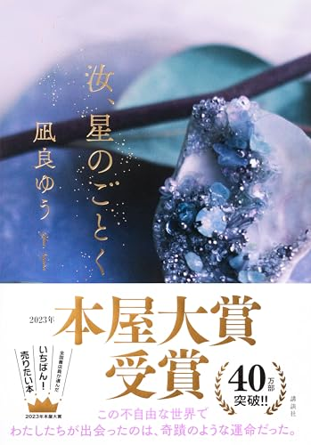
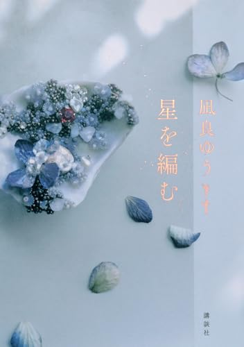
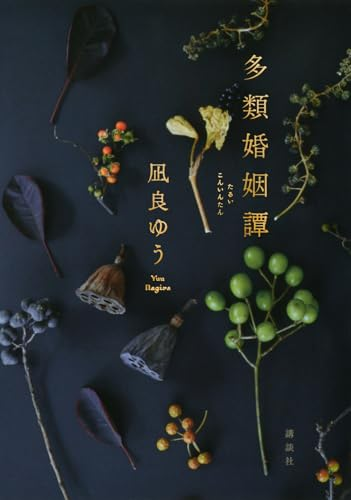

2020年 本屋大賞
流浪の月
「誘拐犯と被害者」として世間に記憶された二人の、事実と真実がずれていく話。凪良ゆうの名前を一気に広めた1冊で、映画化もされました。
世間の「わかりやすい物語」に押し込められる息苦しさを描かせたら、この人は本当にすごい。
Amazonで見る →ゆるっと読書会 vol.6 ── おけもんパート特集
8月に『滅びの前のシャングリラ』を読んで、そのまま止まらなくなりました。新作『多類婚姻譚』もハードカバーで読了。その勢いのまま、今日は1冊じゃなくて5冊まとめて持ってきます。
きっかけは『滅びの前のシャングリラ』。1ヶ月後に小惑星が衝突すると分かった世界で、それでも人が「どう生きるか」を選び直していく連作です。
読み終わってから、この人の他の本も読みたくなって気づきました。本屋大賞を2回獲っている作家さんの、ちょうど新作が出たばかりのタイミングだったんです。

「誘拐犯と被害者」として世間に記憶された二人の、事実と真実がずれていく話。凪良ゆうの名前を一気に広めた1冊で、映画化もされました。
世間の「わかりやすい物語」に押し込められる息苦しさを描かせたら、この人は本当にすごい。
Amazonで見る →
1ヶ月後に世界が終わると分かってから、初めて自分の人生を生き始める人たちの連作集。終末ものなのに、読後に残るのは「今日をどう生きるか」でした。
8月に読んで、この特集の入口になった本です。
Amazonで見る →
瀬戸内の島で出会った高校生ふたりの、15年にわたる愛の物語。家族の事情に縛られながら、それでも自分の足で立とうとする姿に、ページをめくる手が止まらなくなります。
本屋大賞2回目の受賞作。「愛おしいって、こういうことか」となる本です。
Amazonで見る →
『汝、星のごとく』の続編にして「その後」と「まわりの人たち」の物語。前作で脇にいた人たちの人生が立ち上がってきて、2冊でひとつの世界が完成します。
読む順番はぜったいに『汝、星のごとく』→こちら。セットでどうぞ。
Amazonで見る →
約2年半ぶりの新作は、現代の「結婚」と「愛」を描く5編の連作短編集。セクシュアリティ、金銭感覚、世代間格差──価値観がぶつかり合う時代の、いろんなかたちの婚姻譚です。
おけもんはハードカバーで読了したばかり。今日の読書会では、読みたてほやほやの感想を話します。
Amazonで見る →物語に浸りたい人は『汝、星のごとく』→『星を編む』の2冊セットから。いちばん王道で、いちばん泣けます。
短編から試したい人は『滅びの前のシャングリラ』か、新作『多類婚姻譚』へ。どちらも連作短編なので、1編ずつ読めます。
社会派が好きな人は『流浪の月』から。世間と本人の「ずれ」を描く目線は、ここが原点です。